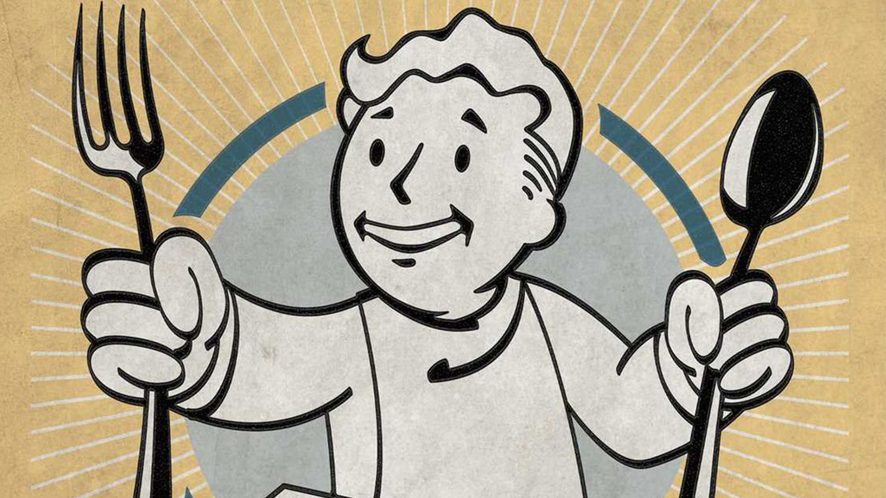

what is your favoritepost-apocalyptic dish?
Look around and find it!
appetizers


soup and stews
sides
mains
- baked broadfly
- joe's spuckies meatball spuckie
- dusty's brahmin burgers
- murelurk queen steak
- poacher angler
- spiced murelurk meat
- braised deathclaw steak
- radscorpion en croute
- deathclaw wellingham
- mole rat manicotti
- mutant mantis marsala
- the captain's feast
- saddle u salisbury steak
- slow-roasted leg of yao guai
desserts
- Mitfruit crumble
- dandy boy apples
- milled pears
- tapioca pudding
- fruit cream pie
- perfectly preserved pie
- birtday cake
- old lady palmer's sweetroll
- fancy lads snack cakes
- slocum's buzzbites
- spicy shocolate bundt cake
- chocolate chip cookies
- mushroom clouds
- buffout
- radioactive gumdrops
- mississippi quantum pie